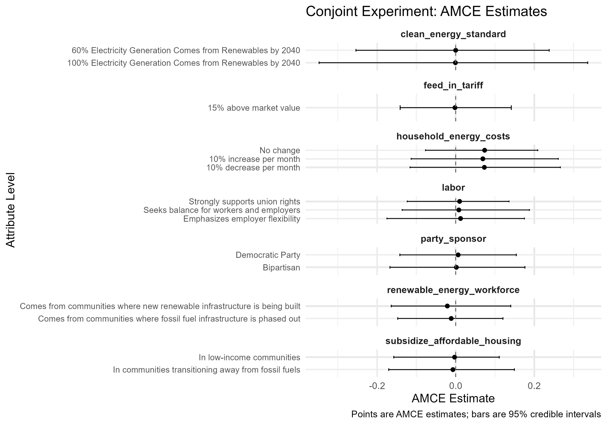
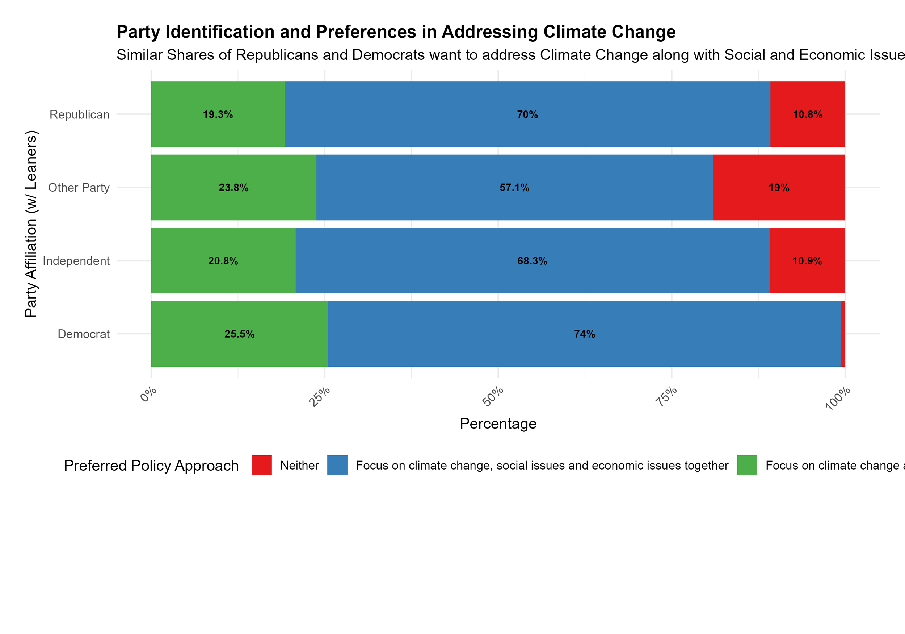
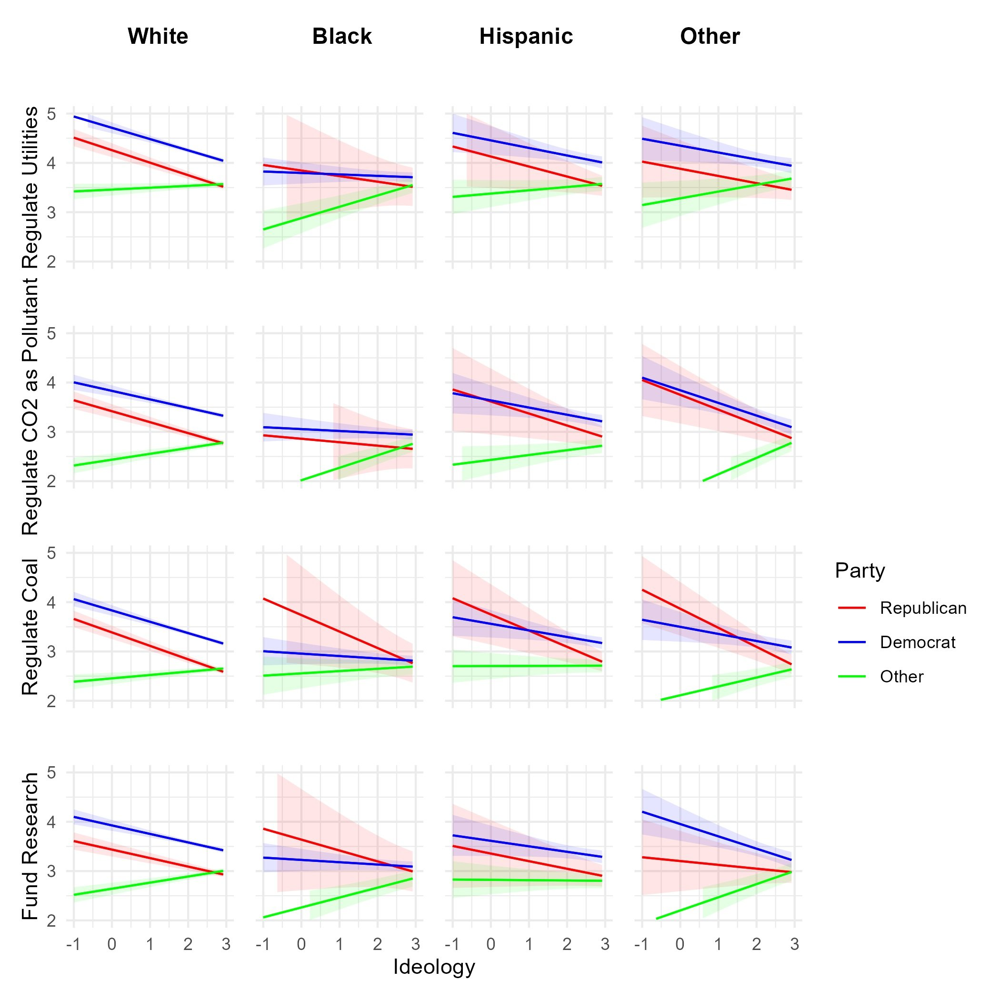
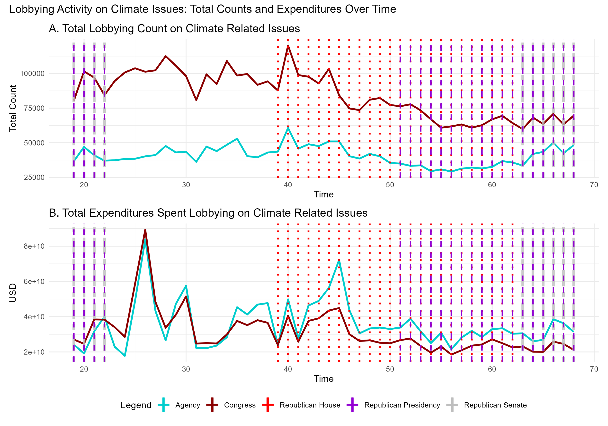
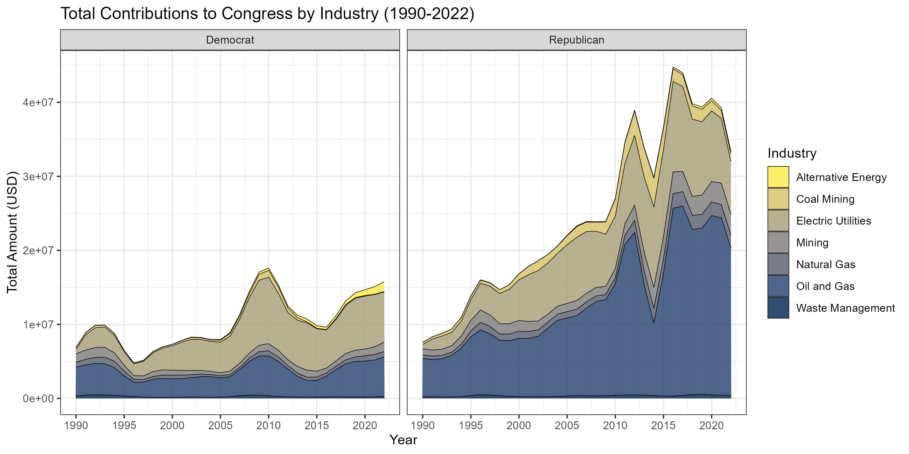
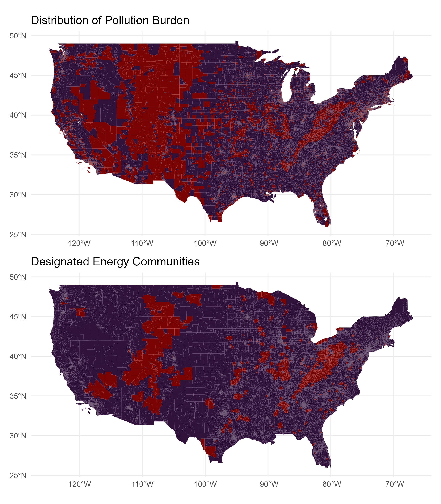
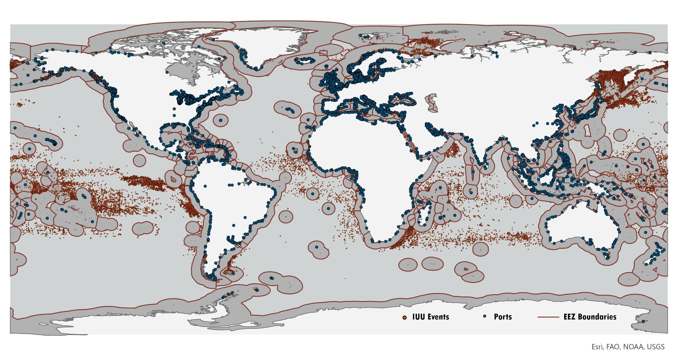

Data Science Projects
Climate Policy Coalition-Building


A survey experiment (April 2025, n=1,154) using conjoint analysis to examine how linking climate mitigation policies with social and economic initiatives affects public support. Key findings: 71.4% of respondents favor addressing climate change alongside social and economic concerns, with support increasing with liberal ideology. The research challenges prior findings suggesting that bundling climate policy with popular social policies increases support—no single policy attribute significantly drove overall support.
Read Full PaperPartisan Support for Climate Mitigation Policies

Analysis of predicted support for climate mitigation policies by demographic group, drawing on the Yale Climate Change in the American Mind survey (2008–2023, n=33,265). Partisan differences are most pronounced among white voters, with substantial overlap across party lines among non-white voters.
Corporate Climate Lobbying

This project tracks climate-related lobbying directed at Congress from 2008 to 2020 using LobbyView data, measuring both frequency and expenditures by publicly traded companies. The analysis examines how firms strategically engage with federal policy based on their exposure to climate-related risk.
Read Full PaperCampaign Contributions & Environmental Policy

Analysis of industry contributions to Congress members from fossil fuel and related sectors—oil and gas, utilities, mining, coal, and waste management—showing partisan patterns in donation distribution across two-year election cycles. Data sourced from FEC disclosures through March 2023.
Read Full PaperEnvironmental Justice & IRA Tax Credits

Comparison of communities facing pollution burden with census tracts qualifying for IRA Section 48C clean energy manufacturing tax credits. The analysis examines spatial overlap and equity implications using data from the Climate and Economic Justice Screening Tool.
Illegal, Unreported, and Unregulated (IUU) Fishing

A working paper examining how scarcity conditions affect illegal fishing activity across varied institutional environments. IUU fishing represents approximately $23.5 billion in annual value—nearly a quarter of the total landed value of all fisheries worldwide. The analysis combines marine heatwave data from Global Fishing Watch with state capacity measures to identify how ecological and institutional factors interact.
DC Heat Exposure and Sensitivity Index
An interactive Shiny application mapping heat vulnerability across Washington DC's 206 census tracts. The tool incorporates socioeconomic factors, cooling center locations and operating hours, and urban tree canopy data (~170,000 public trees) from Open Data DC.
Launch Application